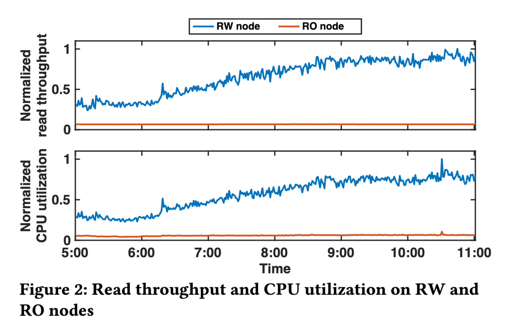
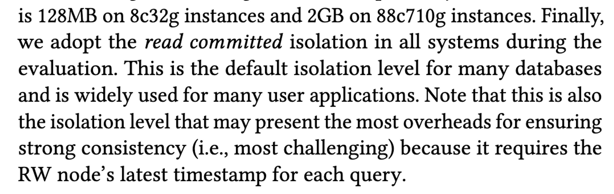

PolarDB 在 VLDB 2023 又发了篇文章，讲他们是如果做一个 SCC(Strongly Consistent Cluster) 的，这篇文章标题很大，但核心内容缺不大，也属于瞄准一小点所做的工作。文章称他们的工作是 “first ’read-write splitting’ cloud-native database”，这点请读者自行品味，本文仅仅讲一下我所看到的亮点。
目标问题
这篇文章要解决的目标问题比较简单，在一写（RW）多读（RO）的集群并且需要 read-after-write consistency 时，往往需要 RW 节点来处理许多读请求，而这一架构原本的目标是将读请求都 offload 到 RO 节点上面去，现实中由于 read-after-write 的要求，目标没有达到，figure 2 可以看到在读流量增长时，RW 节点的 CPU 也跟着增长，RO 节点确实一核有难，八核围观。

为了达成原本的设计目标，即即使在 read-after-write 的要求下，也能够讲读请求 offload 到 RO 节点上，论文设计了 PolarDB-SCC。
Background
现有的在 RO 节点上做到 read-after-write 的方法有两种 commit-wait 和 read-wait，但都有缺陷。
- commit-wait 等所有读节点都同步完之后才返回 commit 成功，写入延迟无法接受
- read-wait 需要等 RO 的 buffer 进度跟上 RW 才能处理读请求，读取延迟无法接受
Solution
PolarDB-SCC 的解法很直接，使用 read-wait 策略，但是将 buffer 切分，切分后，只要是 buffer 没有变化的分片，就不需要 wait。
Design
PolarDB-SCC 有三部分工作
- Hierarchical modification tracker
- Lamport timestamp
- RDMA-based log shipping protocol（与核心思想关系不大）
Hierarchical modification tracker
这部分分为了 global，table，page 三层，分别记载了自己的 scope 下的 max modification timestamp，当遇到读请求时，从 global 检查到 page，只要 read timestamp > level max modification timestamp，读请求就可以直接进行，不需要 read wait，只有当 read timestamp <= page max modification timestamp，才需要 read wait。
Max modification timestamp 的检查是 RO 发起的，但是 herarchical modification tracker 却在 RW 之上，如果每次都去 RW 上读一下，那 overhead 会很大，所以下面就来解决 overhead 的问题。
Linear Lamport timestamp
其实 Lamport timestamp 不是减少拿 max modification timestamp 的关键，关键是它有一个 batch 机制。如果一个 read request 开始处理时，没有空 connection，那么它会被加入队列，等待 available connection，available connection 会取一个当前的 max modification timestamp，用它来检测所有队列中的 read request 是否可以跳过 read wait。
此外，RO 节点还会做一个 cache，如果后面来的 read request timestamp 比 cached RO timestamp 更小，则直接使用 cache 值。
如果是 repeatable read 的 isolation，那只需要用 begin 时候的 timestamp 来做检测就好了，后面的一定会命中 cache。哈哈，又发现又一个 RR 比 RC 实现简单的例子。

另外上面提到了分层嘛，如果需要检测多层的话，实践中会分多次去 RW 节点 fetch max timestamp。
进一步的，为了降低 timestamp fetching 对 RW 节点的影响，这里使用了 one-sided RDMA，可以避免 RW 节点的 CPU 介入。而上面的分层 timestamp 使用 hash 也是为了能够提前确定 RDMA fetch 的地址。
RDMA-based log shipping protocol
这个感觉和文章的核心思想关系不大，在有 RDMA 的情况下，文章又想着用 RDMA 来同步 log，但是 buffer ring 会被反复刷写（RW 节点无法感知 RO 节点的 apply 进度），所以需要仔细检查 buffer 合法性，在 buffer ring 被刷掉时，RO 节点就需要去 storage node 读取 log。
在最后的 review 中，文章提到这个优化只起到了 4% 的效果，因为在能够跳过 read wait 之后，apply duration 不再是瓶颈（只有少部分需要等 read wait 的 read request 收益于这个优化）。
Optimization
文章还做了一个优化，因为同一个事务需要读到自己所写入的数据，在 RW 节点处理完写入语句后，会给 proxy 节点返回一个 LSN，在处理后续的读语句时，proxy 节点会尽可能选择满足这个 LSN 的 RO 节点，算是一个小小的优化。
Challenge
看这篇文章的时候唤醒了我对 PolarDB-X 的一些疑问，通常我们都是先看市场需求之后再考虑数据库的设计，而 PolarDB-SCC 的做法，将 RW 和 RO 节点绑定在了同一个数据中心，他们通过 RDMA 相连，速度非常快。但是这样的大集群能否抗住 AZ outage，是否会在实践中产生很多的跨 AZ 流量？换言之，追求一个 AZ 内部的性能是不是市场真正的需求？